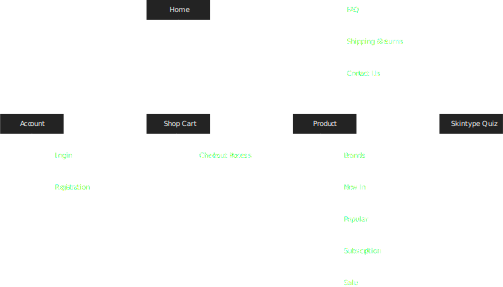

Dewy is a small Australian online commerce website that specialises in providing Australians with a diverse selection of high-quality Korean skincare products. The website makes it easy for customers to access these products, which is difficult to get delivered to Australia and general Oceania region. Dewy is committed to offering these products at affordable prices, making them accessible to a wider range of customers.
There is a lack of accessibility to Korean skin products in Australia due to the unavailability of physical stores and a centralised online platform for shopping. As a results, customers may have to rely on unreliable and overpaid third-party sellers, making it difficult for them to obtain these products at a reasonable cost.
A centralised online platform to purchase Korean skincare products from brands that are hard-to-get-by in Australia. By establishing partnerships with Korean manufactures/distributors, this ensures the products are authentic and reasonably priced and the site would provide a cost-effective solution to the problem of accessibility.
Design Process

Problem Statement
There is a lack of accessibility to Korean skin products in Australia due to the unavailability of physical stores and a centralised online platform for shopping. As a results, customers may have to rely on unreliable and overpaid third-party sellers, making it difficult for them to obtain these products at a reasonable cost.
01 Low accessibility for typical users
02 High cost
03 Inefficient methodology
Solution
A centralised online platform to purchase Korean skincare products from brands that are hard-to-get-by in Australia. By establishing partnerships with Korean manufactures/distributors, this ensures the products are authentic and reasonably priced and the site would provide a cost-effective solution to the problem of accessibility.
01 Centralised online platform
02 Disintermediation for cost efficiency
03 Creating easy to navigate online platform
Identifying User Typology
The team at Dewy has identified that skincare can be overwhelming for those who are new to it, or a luxury to those super busy as it requires a significant amount of time and effort to research and purchase the appropriate products for one’s specific skin types and needs. Additionally, the sheer amount of information and skincare hacks online can be confusing and make it difficult to determine the best products for the individual’s skin type and needs. In addition to the effort required to find the right skincare products, there have been reports of hazardous ingredients in some products, making it difficult for the general public to identify which products are safe to use. This adds an extra layer of concern for those who are looking to start a skincare routine or switch to new products.
Identifying Business Market
To address the problem identified, the team at Dewy developed a subscription base service that delivers customised boxes with 7 different sheet masks to the customer’s door each month. The service includes a self-diagnosis system in the form of a quiz to help customers determine their skin type and ensure they receive the most appropriate products. This way, the customers can enjoy trying new products each month without having to spend time researching and purchasing them individually.
Direct Competitive Analysis
Facetory
Facetory began their business providing subscription services of their 'mystery boxes' with Korean skincare products. The brand has grown to manufacturing their own products and collaborating with other brands since. Now, Facetory products are on the shelves of Target in America.
SWOT analysis
S Strong market share in their niche subsection (Korean sheet masks);
W Lack of variety in products offered due to their niche concentration in sheet masks;
O International expansion;
T Low barrier of entry.
Key Features
✓ Subscription boxes
✓ Skin type quiz
✓ Sheet mask collections
Indirect Competitive Analysis
Innisfree Australia
Innisfree is a Korean cosmetic brand popular for its affordability and for its' aseptic ingredients and image. The brand being launched by the largest skincare and cosmetic company of Korea, the brand offers variety of skincare products, such as sheet masks and face cream.
SWOT Analysis
S Globally recognised brand;
W Relatively short history compared to other global competitors;
O Expansion via the trends of K-beauty in social media in younger generations;
T Rapid growth/development of similar brands.
Key Features
✓ Global physical retail stores
✓ Member-only offers
✓ Brand collaborations
✓ Online exclusive sets
Dewy's business market position
Dewy takes a business position learning from the Facetory's model. Dewy targets customers in Australia and New Zealand by focusing on marketing through social media platforms such as TikTok and Instagram. While Korean beauty brands Innisfree and Tony Moly have already entered the Australian market, Dewy believes that the market is still not saturated and sees an opportunity to establish a presence in the region.
User Persona
"The constant influx of new trends and tips in skincare has made it difficult for me to navigate the market. I am looking for a simple and straightforward solution."
Socio-demographic Information
Name Lucia dela Cruz
Age 27
Relationship Single
Education B.Commerce
Professional Background
Occupation Full-time consultant
Income 70k annual
User Environment
Location Her office/during the daily commute
Device Mobile phone/laptop
Pain Points
- Having to cross-check many different apps and websites to find specific sheet mask she is looking for.
- Wasted time due to some popular products/brands inaccessible from Australia.
- Inconvenient shipping process from overseas.
Typical and Critical Scenarios
Typical I cope with work-related stress by practicing simple skincare routines during my free time. As a full-time employee, my schedule is limited. I am looking for a service that understands my needs and can provide personalised recommendations.
Critical I tend to look for alternative options when a shop does not sell products in a reasonable quantity for my use, or when there is ambiguity about what I am purchasing. I prefer clarity and specificity when shopping.
Design Process

Information Architecture

UX Laws
Fitts's Law

The smaller your target area is, the longer it takes the user to perform that action based on the distance/size ratio.
Millers's Law

Display information in chunks, this way it is manageable to users to remember what they consumed.
Von Restorff Effect

Highlight elements like Call to Action (CTA) to stand out from the rest of the design, it's easily noticeable by user.
Jakob's Law

For instance think how Amazon, myntra and most of the ecommerce sites behave. They follow similar patterns, similar checkout processes most of the models are almost same. This way the user will focus on their task rather than learning new models.
Low Fidelity Wireframing

UI grid and considerations
Desktop Resolutions

Using multicolumn grid, using regulated spacing system create distinctive categorised features of the website, showing the hero image/information as the initial focal point, the vector line leads the eye down to the action button and more information about the brand/products.
Mobile Resolutions

Studying the relationship between the user's thumb and the ease of accessibility of the screen is studied. Whilst there are other methods of holding a mobile device, this particular style is the most commonly used with compromises in the 'thumb zone'. Area is highlighted for optimal placing for any action or directory buttons.
High Fidelity Mock-up

The accessibility study shown previously of the thumb zone was used to locate action buttons and used grids to ensure the consistency in the UI, as well as to establish a clear hierarchy throughout the page.
Reflection
In reflection on the Dewy project, I learned the importance of understanding the user and their needs. Through conducting the user research, I was able to gain valuable insight into the target audience's pain points and preferences. This helped inform my design decisions and ensured that the final product was user-centered. Additionally, iterating and validating my designs through prototyping and testing allowed me to gather feedback and make improvements to the user experience.
I realised the importance of usability in creating the navigation intuitive ensuring that all aspect of the product are taken into consideration. One of the most important takeaways from this project was that focusing on the user and their needs has a direct correlation with sales rate. By understanding the target audience and designing a user-centered product, it will lead to increased satisfaction and a likelihood of them making a purchase.
Key Takeaways
• Conduct thorough user research to gain insight into the target audience's needs, wants and pain points, to inform the design decisions to ensure the final product is user-centered.
• Use prototyping and testing to validate design decisions and gather feedback.
• Continously gather feedback and use it to imporve the product even after the product has been launched.